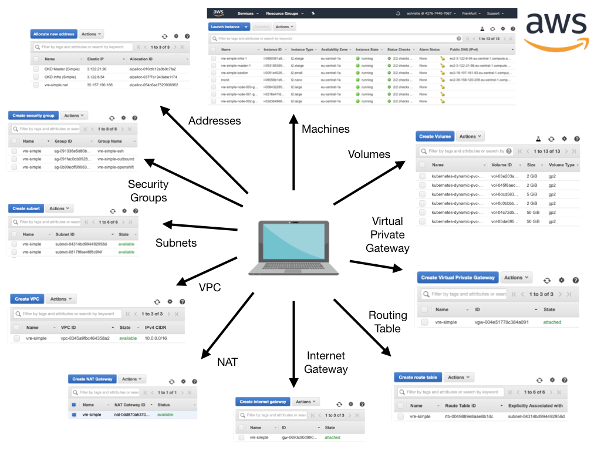

Orientation¶
Here we introduce you to the OKD orchestrator, guide you through its use and walk through one of the built-in standard AWS-based tutorial files. 1
Introduction¶
The OKD Orchestrator is a utility designed to simplify simple 2 RedHat OKD platform installations.
The OKD Orchestrator is an OpenRiskNet funded project 3 and the orchestrator has a number of roles: -
Definition of a deployment
Compilation of base operating system machine images
Provisioning of cloud-based compute instances
Deployment of the OKD platform
It achieves this through the use of Packer, Terraform and Ansible, all managed by a pair of simple Python-based command-line utilities and a high-level configuration file.
We are not going to discuss Packer, Terraform or Ansible in this orientation. It might be valuable to understand their roles as infrastructure as code tools but you don’t need to as the OKD Orchestrator wraps their execution up for you.
If you want to recreate this orientation’s deployment on AWS you will need: -
An AWS account and SSH keypair
Git to clone the OKD Orchestrator
Docker to run the OKD Orchestrator in Docker
Python (and a suitable virtual environment) to run the OKD Orchestrator from the command-line
A certbot/Let’s encrypt account if you want to enable also auto-generate SSL certificates
Familiarity with the unix command-line and shell
An internet connection
The more detailed guide that starts with the Getting Started document should provide you with all the necessary instructions.
Why do I need the OKD Orchestrator?¶
You don’t.
You just need an OpenShift OKD inventory file and some hardware.
Create an inventory file…
The configuration of OKD is, understandably, complex. There are lots of parts to OKD and a myriad of configuration parameters spread over pages of some quite extensive documentation. OKD is no different if you don’t understand it then configuring it will be difficult as one depends on the other.
Anyway, you’re through the documentation and you’ve created your OKD inventory file (in an extended-ini or YAML format) knowing what you need to do to create your compute instances…
Create your hardware…
If you’ve used a cloud provider’s built-in tools you’ll appreciate that creating precisely what you need for the network topology can be challenging.
Each provider uses their own terms for the network components (security groups in AWS, firewalls in GCE), which are often connected differently (groups connect to instances in AWS but firewalls connect to a networks in GCE).
The good news is that if you’re tied to one provider for business reasons then at least your task is reduced somewhat - there’s just one learning curve to climb.
Run the installer…
Clone the OpenShift repo on the cloud machine
Switch the a tagged release
Install Ansible
Run the installer
But…
The OKD Orchestrator tries eliminate these complexities by: -
Consolidating both cluster and OKD configuration definitions into one human-readable configuration file
Providing simplified create and destroy* command-line utilities so that you can create your OKD installation and then quickly tear it down
Trying to make the process cloud-agnostic by providing built-in Terraform orchestration for key providers
The OKD Orchestrator also supports advanced features like customer-specific (on-premise) or bare-metal installations and post-OKD playbooks for the installation of additional applications (like the ACME Controller certificate provisioner):
"Genius is making complex ideas simple, not making simple ideas complex."
-- Albert Einstein
So, how do I use the orchestrator?¶
The orchestrator is normally executed using a Docker container launched from within the project root of a clone (or fork) of the orchestrator GitHub repository. The Docker container is essentially a batteries included approach - where all the tools are built-in.
If you are comfortable working with your own copies of the underlying tools (i.e. Packer and Terraform) and Python virtual environments, you can run the orchestrator directly from the command-line 4.
We’ll explore the basics of the orchestrator by reproducing the built-in configuration for a small AWS-based installing called standard-aws-frankfurt-3-11 using the container image distribution of the OKD orchestrator, which contains all the tools you need.
Once you have cloned (or forked) the OKD Orchestrator 4 distinct steps are required to install OKD on a new cloud environment: -
Define a deployment
Compiling machine images
Provisioning physical compute instances
Deployment of the OKD platform

Assuming that you have a container runtime like Docker installed your next step is to clone the OKD Orchestrator to our desktop using Git:
$ git clone https://github.com/InformaticsMatters/okd-orchestrator.git
$ cd okd-orchestrator
This will provide us with the create (and destroy) utility and the example deployments including the standard AWS deployment we’re illustrating here and the container we’ll run will provide us with all the additional tools including a Python environment.

As well as this high-level orientation there is a more detailed discussion of the orchestrator that starts with the Getting Started document.
A discussion of the directories and layout of the OKD Orchestrator can be found in the accompanying Architecture document.
Step 1 - DEFINE a deployment¶

Here we define the installation (topology) and provide some key (secret) material that consists of: -
A deployment configuration
A set of environment variables in an environment file
An SSH key-pair

Deployments are defined in a YAML file in the OKD Orchestrator’s
deploymentsdirectory and variables required to interact with your cloud provider setup in asetenv.shfile. The deployment file (configuration.yaml) resides in a sub-directory and allows you to define the physical and software topology of the OKD cluster.The environment file (a shell-script called
setenv.sh) lives in theprovider-envdirectory, where you will find templates of required variables for the supported cloud providers. The setenv-aws-template is a good example of what might be expected in terms of environment variables.The SSH keypair (kept in the root of the project) allows the orchestrator to securely communicate with the physical instances it will be creating.
Anatomy of a deployment configuration¶
Before we orchestrate the built-in example we can spend some time exploring the anatomy of the deployment configuration, the YAML file that describes the cluster hardware you desire and the OKD software that will be installed.
You can find a discussion of the deployment configuration in the Anatomy of a Deployment Configuration document, or you can inspect the built-in compact-aws-frankfurt-3-11 configuration that has comprehensive in-line documentation.
Step 2 - COMPILE a Machine Image¶
In this initial step, which you’d run once for each cloud-provider and region (depending on provider), we use Yacker (a YAML wrapper around the HashiCorp Packer utility) to compile a machine image suitable for OKD.
Its role is to create an operating system (machine) image that contains all the extra bits needed by OKD. 5
The compilation takes place on a temporary machine created in your provider’s network. The machine is small but may still incur a cost depending on the cloud-provider’s pricing policy.
To compile you simply run the yacker build command from within the
orchestrator container image:
$ ./okdo-start.sh
$ yacker build yacker/3.11/aws/okd.yaml
$ yacker build yacker/3.11/aws/bastion.yaml
A detailed introduction to compiling machine images can be found in the document Compiling Machine Images.
Once complete the resultant machine images are saved in your cloud account and illustrated in the following diagram.

The default Yacker build for AWS will build machine images for the Frankfurt
(eu-central-1) region.
Step 3 - PROVISION the hardware¶

With machine images built, your next step relies on the deployment configuration that you have defined.
The configuration file is used by the create.py utility’s --cluster
option to form the physical compute instances that will be used by OKD.
From within the OKD Orchestrator container you’d typically run the
following, which instructs the create utility to create a cluster
based on the configuration directory standard-aws-frankfurt-3-11:
$ ./create.py --cluster standard-aws-frankfurt-3-11
Illustrated in the diagram below, the by-product of the provisioning process is: -
A network of cloud-based hardware
An inventory file for use in the next stage
A copy of the OKD Orchestrator on the Bastion machine, which includes the deployment configuration, inventory and other key files
The orchestrator achieves this by compiling a set of Terraform templates that represent your hardware needs and then utilises Terraform to instantiate all the physical components required to host your environment. This typically involves instantiating a large number of components (networks, firewalls, machines and volumes).
The AWS cluster components for our _standard_ configuration looks something like this: -
Step 4 - DEPLOY OpenShift OKD¶

With the cluster created the final step, installing the OKD platform software, takes place on the Bastion machine (or Master if the Master is also acting as a Bastion). A copy of the orchestrator, deployment and all relevant files have been placed on it by the provisioning step.
The orchestrator exposed the address of the Bastion at the end of the cluster instantiation, so you simply need to hop onto it and run the final stage from there:
$ ssh centos@<bastion-address>
$ cd okd-orchestrator
$ ./create.py

At the end of this stage your OKD platform has been installed and configured.
A built-in OKD admin user (which you are required to have) will have been
created and given the password you provided in your setenv.sh environment
file.
Deleting your cluster¶
We’re not going to go into detail here but, once you’re done with your
cluster, the OKD orchestrator comes with a handy destroy utility.
It doesn’t uninstall OKD it simply deletes all of the cloud objects and any volumes created created by the underlying OKD platform. Your just need to run the following from your OKD desktop container:
$ ./destroy.py standard-aws-frankfurt-3-11
Further reading¶
You can read more about the orchestrator by following the Getting Started guide and a number of more advanced features are covered in the Advanced Topics section.
Footnotes
- 1
Depending on your network performance the AWS configuration should be ready to use in about 30 minutes.
- 2
Single Master, single infrastructure and multiple compute nodes. i.e. devoid of load-balancing capabilities and zone redundancy but sufficient to experiment with complex projects
- 3
Some icons in this presentation are produced by Freepix under the Creative Commons BY 3.0 licence.
- 4
The documentation assumes that you will be using the containerised OKD
- 5
Even with the latest OKD it isn’t installed on an “out-of-the-box” operating system - some stuff needs to be added (typically to CentOS)